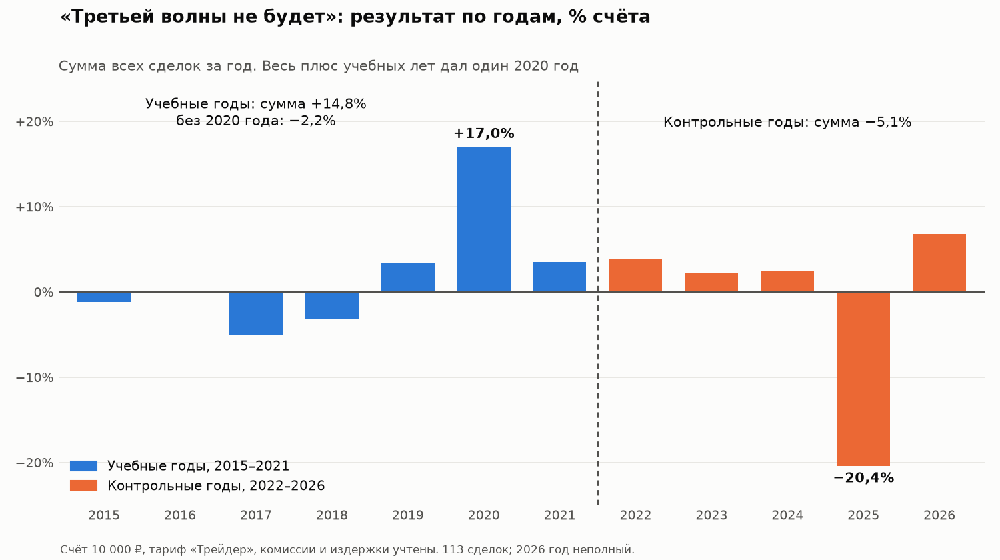

Я построил систему проверки торговых стратегий. Из сотни с лишним идей фонд денежного рынка на истории обогнали семь, но ни одна пока не доказана
Всё, что ниже, — мой личный опыт. Я не профессиональный трейдер, а частный инвестор, который хотел зарабатывать на бирже больше, чем даёт вклад.
Зачем мне это было нужно
Идей для торговли много: из блогов, из книг, свои собственные. Проверять каждую на живых деньгах — долго и дорого. Пока поймёшь, что идея не работает, уйдут месяцы и часть счёта.
Мне был нужен инструмент, который заранее ответит на простой вопрос: стоит ли стратегия моих денег и времени — или нет. И ответит честно, без самообмана.
Несколько слов, без которых дальше не обойтись
Если эти слова вам и так понятны, раздел можно пропустить.
- Индекс Мосбиржи — одно число, которое показывает, как в среднем меняются цены крупнейших российских акций. Растёт индекс — в среднем растут и они.
- Биржевой фонд — готовый набор ценных бумаг, который продаётся на бирже как одна бумага. Например, купив фонд на индекс Мосбиржи, вы покупаете долю сразу во всех акциях индекса.
- Фонд денежного рынка — биржевой фонд, который работает почти как вклад: доход близок к ставке ЦБ, деньги можно забрать в любой день.
- Доходность фонда в проверках — такие фонды появились на бирже только в 2020–2023 годах, а проверка идёт с 2015-го. Поэтому за все годы я считаю их доходность по модели: ключевая ставка ЦБ минус 0,7% в год.
- Сделка — здесь это покупка вместе с последующей продажей. «Результат на сделку» — сколько процентов она принесла или отняла.
- Издержки — всё, что сделка стоит сверх цены акции: комиссия брокера и разница между ценой, по которой можно купить, и ценой, по которой можно продать.
- Тариф «Трейдер» — тариф брокера, на котором я считаю проверки: 390 ₽ в месяц плюс 0,05% от суммы каждой покупки и продажи.
- Свеча — цены акции за отрезок времени: в начале и в конце отрезка, самая высокая и самая низкая. Бывают дневные свечи, а бывают 10-минутные — их за день набирается несколько десятков.
- Гэп — разрыв в цене: акция открывается утром заметно выше или ниже, чем закрылась накануне.
- Стакан — список заявок на покупку и продажу акции, которые прямо сейчас ждут исполнения на бирже.
- Ликвидная акция — акция, которую легко купить и продать: по ней каждый день проходят сделки на большие суммы.
- Просадка — насколько счёт опускался от своего максимума, прежде чем снова вырасти.
- Фьючерс — договор купить или продать акцию в будущем по цене, о которой договорились сегодня.
- Короткая продажа — продажа акций, взятых у брокера в долг: так зарабатывают на падении цены.
- Лимитная заявка — заявка с заранее указанной ценой: если цена до неё не дошла, сделки нет. Обычная заявка исполняется сразу по текущей цене.
- Проверка на истории — расчёт того, сколько стратегия заработала бы, если бы торговала по своим правилам в прошлые годы.
- Демо-счёт — учебный счёт без настоящих денег: бот торгует по настоящим ценам, но деньги не тратятся.
Что я построил
Систему проверки и торгового бота. Над ними работает команда ИИ-агентов: один превращает идею в точные правила и принимает работу, второй пишет программу и запускает проверку. Я задаю рамки и решаю, что проверять дальше.
Что есть у системы:
- история Московской биржи с 2015 года: дневные и 10-минутные свечи;
- дивиденды (выплаты акционерам из прибыли), официальные сообщения компаний, прогнозы аналитиков, данные по фьючерсам;
- реальные издержки по тарифам брокера;
- торговый бот и демо-счёт, на котором отобранные стратегии торгуют по заранее записанным правилам.
Каждая идея получает подробный отчёт по единому шаблону:
- сколько было сделок и сколько рублей они принесли бы на счёте от 10 000 ₽ до 1 000 000 ₽ — на разных тарифах брокера, с учётом абонплаты;
- результат по годам — видно, не держится ли всё на одном удачном году;
- результат без лучшего года и при удвоенных издержках — выдержит ли стратегия, если ей повезёт меньше, а торговля обойдётся дороже;
- сравнение с фондом денежного рынка и со случайными покупками тех же акций.
Правила, которые защищают от самообмана
1. Соперник — фонд денежного рынка. Его доходность зависит от ставки ЦБ. По модели из словаря — ключевая ставка минус 0,7% в год — в среднем за 2015–2026 годы это около 10,6% годовых, в последние годы — 12–18%. Сравнение всегда идёт за один и тот же период, после всех издержек и с учётом всего счёта, включая упавшие акции, которые ещё не проданы. Свободные деньги стратегии тоже лежат в этом фонде. Планка простая: обогнать фонд после всех издержек. Если стратегия его не обгоняет, проще купить фонд.
2. Правила записываются до проверки. Сначала записывается, когда покупать, когда продавать и что считать успехом. Потом — один прогон. Подкрутить настройки и тихо перезапустить нельзя. Та же идея с другими настройками — это уже новый вариант, и он тоже записывается в общий реестр — список всех проверок — вместе с итогом, даже провальным. Поэтому всегда видно, сколько вариантов было перепробовано.
Зачем так строго? Представьте: 100 человек подбрасывают монетку по 10 раз. Почти наверняка хотя бы у одного выпадет 8 орлов из 10 или больше. Это не умение — просто людей было много. Со стратегиями то же самое: если перепробовать сто вариантов настроек, один из них почти наверняка будет выглядеть отлично — по случайности. Я и сам часто попадал в эту ловушку.
3. Проверка на новых данных. Знания ученика проверяют на новых задачах, а не на тех, что он уже решал с подсказкой. Со стратегиями так же, поэтому данные делятся на три части:
- 2015–2021 годы — «учебные». На них ищут закономерности и превращают идею в точные правила.
- 2022–2026 годы — «контрольные». Готовые правила прогоняются на этих годах один раз, без исправлений.
- Отложенная половина акций. Ещё до начала работы акции делятся пополам. Правила придумывают и проверяют только на первой половине — и на учебных годах, и на контрольных. Сколько стратегия заработала бы на второй половине, всё это время никто не считает. Только когда правила окончательно записаны, система один раз прогоняет их на отложенных акциях. Хороший результат там значит, что правило работает не только на тех акциях, на которых его придумали.
Если стратегия хорошо выглядела на учебных годах случайно, на новых данных удача обычно не повторяется. У настоящей закономерности есть шанс проявиться и там — хотя не обязательно в каждом году.
4. Сравнение со случайными покупками. Даже правило, которое ничего не знает о будущем, может заработать, если весь рынок рос. Чтобы отделить заслугу правила от заслуги рынка, система делает случайные покупки: те же акции, в те же месяцы, столько же сделок, продажа по тем же правилам. Отличие одно — день покупки выбирает не сигнал стратегии, а жребий. В некоторых идеях жребий выбирает не день, а акцию — смотря что решает само правило.
Одна такая попытка может случайно оказаться удачной или неудачной. Поэтому система повторяет её тысячу раз и получает тысячу случайных прогонов, с которыми сравнивает стратегию.
Пример. В 2020–2021 годах рос почти весь рынок. Допустим, стратегия заработала 20%, а случайные прогоны — в среднем 18%. Значит, заработал в основном рынок, а не сигнал. Сигнал чего-то стоит, только если стратегия лучше почти всех случайных прогонов.
5. Три вердикта. По итогам проверки стратегия получает один из трёх вердиктов:
- «не обгоняет фонд» — хотя бы в одном из периодов, на учебных или на контрольных годах, она заработала меньше фонда;
- «обгоняет фонд, но не доказано» — обогнала фонд в оба периода, но проверки выше не позволяют отличить это от удачи: например, сделок слишком мало или случайные покупки зарабатывали не меньше;
- «доказано» — обогнала фонд, прошла все проверки и подтвердила результат на демо-счёте, на данных, которые появились уже после того, как правила записаны. На это уйдут годы.
Что показала проверка
В моём списке больше 200 идей. Больше 100 из них система за несколько недель проверила на истории. Ещё 8 проверяются только на новых данных, потому что истории для них нет. Остальные я закрыл до прогона: не хватило данных или событий. Многие идеи проверялись в нескольких вариантах: например, держать акцию не 10 дней, а 5, или покупать после падения не на 5%, а на 3%.
Каждый новый вариант — как ещё один человек с монеткой из примера выше. Если долго менять настройки, пока результат на истории не станет красивым, рано или поздно повезёт. Но такая подогнанная стратегия обычно проваливается на новых данных.
Итог такой: доказанных стратегий пока нет, обгоняют фонд, но не доказаны — 7 идей. О них ниже. Остальные проверенные идеи фонд не обогнали. Сначала — самое интересное из них.
Частая торговля. Идея — много сделок с небольшим плюсом в каждой. Я проверил десять вариантов внутридневных правил — когда акцию покупают и продают в тот же день. Правила взяты из открытых источников:
- пробой диапазона первых минут: купить, когда цена поднялась выше максимума первых минут торгов;
- откат к средней цене дня: если акция с утра растёт, купить, когда цена ненадолго опустилась к средней цене за день;
- покупка после короткого резкого падения;
- фигура «флаг»: после резкого роста цена ненадолго замирает, покупка — когда она снова идёт вверх;
- продолжение утреннего движения индекса к концу дня.
Все — на 10-минутных свечах акций и индекса Мосбиржи, только покупки, на тарифе «Трейдер»: 390 ₽ в месяц плюс комиссия за каждую сделку. До издержек они приносили от −0,04% до +0,10% на сделку, а покупка и продажа вместе обходятся примерно в 0,22%. На сделке в 10 000 ₽ это не больше 10 ₽ заработка и 22 ₽ издержек: в этих правилах каждая сделка в среднем уводила в минус, даже без платы 390 ₽ в месяц. Лимитные заявки, короткие продажи, фьючерсы и тарифы с меньшими издержками я не проверял — о них эта проверка ничего не говорит.
«Никогда не продавать в убыток». Идея такая: покупать ликвидные акции, которые устойчиво растут и о которых выходят хорошие новости, и продавать, когда цена вырастет на 6–11%. В убыток не продавать — ждать, пока цена вернётся. Каждый месяц добавлять на счёт новые деньги.
Читать новости моя система пока не умеет — это я хочу добавить в будущем. Поэтому хорошие новости я заменил ценовым признаком: за последний месяц акция выросла и за две недели ни разу резко не упала. Размеры покупок и цели продажи взял из описания идеи, ничего не подбирая. Каждый месяц на счёт добавлялось 10 000 ₽, проверка — с 2015 года.
| Вариант | Доходность в год | Худшая просадка | В убыточных акциях в конце |
|---|---|---|---|
| Фонд денежного рынка | +11,5% | 0% | — |
| Растущая акция: покупка по 10 000 ₽, продажа при +11% | +11,1% | −22% | 11% |
| Растущая акция: покупка по 5 000 ₽, продажа при +6% | +11,5% | −11% | 5% |
| Упрощённо: случайная акция, продажа при +5% или +11% | +1…+2% | −45…−53% | 95–98% |
| Упрощённо: самая упавшая за месяц акция, продажа при +5% или +11% | −9…−10% | −72…−80% | 97% |
Доходность считается на все вложенные деньги с учётом пополнений, непроданные акции — по рыночной цене. Для случайной акции — типичный результат из 500 прогонов.
Оба варианта заработали почти ровно столько же, сколько фонд, но счёт по дороге проседал на 11–22%. А выбор акций по этим правилам оказался не лучше случайного выбора среди ликвидных акций индекса.
В самый сильный рост рынка — от дна в марте 2020 года до пика в октябре 2021-го (отрезок выбран задним числом) — правила приносили 34–49% годовых. Но индекс Мосбиржи целиком, с учётом дивидендов, за те же месяцы дал ещё больше — 52%. А фонд денежного рынка — около 4,6% годовых. В такие месяцы удачными выглядели почти любые покупки акций.
Нижние строки таблицы — упрощённые версии, которые я проверил первыми. В этих версиях правило «не продавать в убыток» само по себе не спасло: при покупке случайных или самых упавших акций к концу почти все деньги застряли в бумагах, которые так и не вернулись к цене покупки. Если покупать растущие акции, такого почти нет: в убыточных акциях к концу осталось 5–11% денег.
Идеи из научных статей. Закономерности, которые учёные описали для других рынков, — рост цены перед публикацией отчётности (финансовых результатов компании), всплеск объёма торгов (сколько акций за день купили и продали), дни выплаты зарплат — в моём тесте на Мосбирже подтвердить не удалось. Причины могут быть разными: другой рынок, издержки, мало данных.
«Утренний рывок продолжится». Популярная идея про гэп: если растущая акция утром открылась выше вчерашнего закрытия на 1,5% и больше, рост продолжится. Я проверял покупку через 10 минут после открытия и продажу в полдень или в конце дня — на 10-минутных свечах, только покупки. Результат после издержек — от −0,07% до −0,96% на сделку, и правило оказалось не лучше покупок тех же акций в случайные дни их роста.
Следить за крупными игроками. Я проверил два вида данных. Первый — крупные сделки, которые участники заключают напрямую, минуя стакан: биржа публикует, на какую сумму их заключили за день. Второй — позиции во фьючерсах: биржа публикует, сколько договоров на покупку и на продажу держат компании и фонды, а сколько — частные лица. В обоих случаях я покупал акцию после сигнала и держал 20 торговых дней. В этой проверке ни то, ни другое не помогло выбирать дни для покупки: результат был не лучше случайного. Возможно — это только догадка, — к моменту, когда эти данные видны всем, цена уже успевает измениться.
«Третьей волны не будет». Это моё наблюдение: небольшое движение цены часто идёт двумя волнами, а третьей нет. Волна — отрезок, когда цена идёт в одну сторону. Правило: если цена упала двумя волнами, в сумме на 8% и больше, а потом закрылась выше вершины последнего отскока — короткого подъёма между двумя падениями, — купить и держать две недели. Если цена закроется ниже последнего дна, продать раньше: значит, третья волна всё-таки началась. Отчёт по годам хорошо показывает, откуда взялся плюс на учебных годах:

Весь плюс учебных лет дал один 2020 год, без него результат отрицательный. На контрольных годах — минус. А случайные покупки тех же акций в те же месяцы зарабатывали в среднем +1,9% на сделку против +0,3% у правила.
Сезонность. Популярная идея: у каждой акции есть «свои» месяцы — например, конкретная бумага годами растёт в марте. Я проверил такое правило: каждый месяц покупать три акции, которые в этом месяце лучше всего вели себя в прошлые годы.
| Период | Стратегия против фонда, в месяц |
|---|---|
| Учебные годы, 2016–2021 | +0,6% |
| Контрольные годы, 2022–2026 | −2,8% |
На учебных годах правило немного обгоняло фонд, а на контрольных годах стало сильно отставать: хорошие месяцы часто превращались в плохие. С 2016 года такой счёт терял в среднем 4,3% в год, а фонд приносил 10,4%. Сезонность четырёх отраслей — ритейла, удобрений, авиаперевозок и энергетики, с заранее выбранными месяцами, — тоже не подтвердилась: результат оказался не лучше случайно выбранных месяцев.
Что обогнало фонд, но пока не доказано
Семь идей обогнали фонд и на учебных, и на контрольных годах. Но ни одну я не могу назвать доказанной: у каждой есть измеренная причина, по которой результат мог быть удачей.
- Два сигнала технического анализа. Технический анализ ищет на графике цены рисунки, после которых цена чаще идёт в определённую сторону. Я проверил восемь популярных сигналов, фонд обогнали два. Один построен на индикаторе RSI, другой — на MACD: это формулы, которые по прошлым ценам оценивают, куда и насколько сильно движется цена. У сигнала RSI мало сделок — 22 на учебных годах и 33 на контрольных, — а на контрольных годах его перевес над фондом сократился вдвое. У сигнала MACD случайные покупки тех же акций почти в девяти случаях из десяти зарабатывали не меньше: фонд обгонял не сам сигнал, а эти акции в эти месяцы.
- Покупки вслед за инсайдерами. Инсайдеры — люди, связанные с компанией: руководители, члены совета директоров, крупные акционеры. Их сделки с акциями своей компании становятся известны публично. Правило: купить акцию, когда стало известно, что инсайдер сам купил её на 1 млн ₽ и больше. Фонд такие покупки обгоняли в оба периода, но случайные покупки тех же акций в те же месяцы примерно в трети случаев давали не меньше.
- Два календарных окна в индексе. Купить фонд на индекс Мосбиржи в середине декабря и продать в последний день года. Или купить в последний день декабря и продать в конце десятого торгового дня января. Остальное время деньги лежат в фонде денежного рынка. Декабрьское окно обгоняло фонд в оба периода, но это всего 7 и 4 декабря — слишком мало, чтобы отличить закономерность от удачи. Январское на контрольных годах обгоняло фонд совсем немного.
- Ещё одно правило для индекса — когда держать фонд на индекс, а когда фонд денежного рынка. Перевес над фондом есть в оба периода, но небольшой, а от месяца к месяцу результат сильно скачет: по таким цифрам удачу от закономерности не отличить. А индекс, купленный на случайные отрезки времени — столько же раз в год, — примерно в одном случае из десяти давал не меньше.
- Одна стратегия прошла все проверки на истории. Для меня это хороший знак: система не бракует всё подряд, а умеет отличать идеи. Но гарантии, что стратегия действительно работает, у меня нет: правило придумано на истории, а история может обмануть. Поэтому сейчас стратегия торгует на демо-счёте по заранее записанным правилам — на данных, которых точно никто не видел. Сделок у неё немного, так что быстрого ответа не будет. Когда их наберётся достаточно, я расскажу о результатах.
Правила всех семи записаны, и теперь они проверяются на новых данных — тех, что появляются уже после записи правил.
И оговорка про деньги. Перевес посчитан с издержками на сделки. Абонплату «Трейдера» — 390 ₽ в месяц — брокер берёт со всего счёта, а я исхожу из того, что на одном счёте торгуют около десяти стратегий: на каждую приходится примерно 39 ₽ в месяц. Если бы одна стратегия на счёте 100 000 ₽ платила абонплату целиком, фонд перестали бы обгонять оба сигнала технического анализа и январское окно. Покупки вслед за инсайдерами, декабрьское окно и ещё одно правило для индекса обгоняли бы его и тогда. На счёте 10 000 ₽ абонплата за год — почти половина счёта, поэтому в отчёте каждой идеи есть отдельный расчёт для счетов разного размера.
Ограничения
У моей проверки есть слабые места, и о них лучше сказать сразу:
- Отложенные акции постепенно перестают быть новыми. Проверка на отложенных акциях честна, пока на них никто не смотрел. Каждый новый прогон немного «засвечивает» их: я уже знаю, как на них вели себя прежние идеи, и это невольно влияет на следующие. Я обращался к ним уже 10 раз. Поэтому теперь история для меня — только первый отсев, а окончательную проверку даёт демо-счёт: торговля на данных, которые появляются уже после того, как правила записаны.
- Компании, которые ушли с биржи. Если проверять стратегию только на тех компаниях, что торгуются сегодня, из истории выпадают обанкротившиеся и ушедшие с биржи. Среди них нередко оказываются как раз неудачные. Без них прошлое выглядит лучше, чем было на самом деле, — как если бы надёжность старых машин оценивали только по тем, что до сих пор на ходу. В части моих данных таких компаний не хватало. Я добрал их из другого источника и пересчитал результат — он почти не изменился. Но по 8 компаниям данных найти не удалось.
- Не все даты точные. Часть дат событий взята не из первоисточников. Поэтому для некоторых событий нельзя точно сказать, когда о них узнал рынок, а для многих стратегий важен даже один день.
- Проверить можно только чёткие правила. Интуицию программа не повторит, а читать новости пока не умеет.
- Вердикт относится только к проверенным правилам. Почти все проверки — только покупки, по рыночной цене, на тарифе «Трейдер», с конкретными порогами и сроками. О лимитных заявках, коротких продажах, фьючерсах, других тарифах и настройках они ничего не говорят. «Не обгоняет фонд» относится к этим правилам, а не к идее вообще.
Что в итоге
Прибыльной стратегии, в которой я был бы уверен, у меня пока нет. Зато я получил две вещи, которые для меня оказались ценнее.
Знания. Для себя я сделал такой вывод: у рабочей идеи должна быть причина — понятное объяснение, почему цена должна двигаться именно так. Если правило нашлось просто в цифрах и объяснения ему нет, скорее всего, это совпадение. А прежде чем верить красивому результату, я теперь сравниваю его с фондом денежного рынка и со случайными покупками, считаю, сколько вариантов было перепробовано, и смотрю, что получилось на новых данных.
Инструмент. Система, которая за несколько недель проверила на истории больше 100 идей. Семь из них обогнали фонд, и теперь их проверяет время. Она экономит то, ради чего я её и строил: время и деньги, которые иначе ушли бы на проверку идей на живом счёте.
Давайте исследовать идеи вместе
Одному искать идеи сложно, а проверка у меня уже настроена. Поэтому предлагаю так: вы приносите идею, я её проверяю, а потом мы вместе разбираем, что получилось.
Идею можно описать в комментариях или прислать мне в личные сообщения. Достаточно словами: когда покупать, когда продавать, какие акции брать. Я переведу это в точные правила, сверю с вами, что понял правильно, и пришлю отчёт: по годам, на старых и новых данных, с комиссиями, в сравнении с фондом и со случайными покупками.
Результаты публикую только по согласованию с автором идеи. Если не захотите их показывать, отчёт останется между нами. А если разрешите — даже отрицательный результат сэкономит время тем, кто думал о той же идее.
Буду рад и критике самой проверки: если видите в ней слабое место, напишите.
Свои проверки, включая неудачные, и результаты, которые авторы разрешили показать, я выкладываю в Telegram-канал @testing_trading_strategy.
Это мой личный опыт и мнение, а не инвестиционная рекомендация.